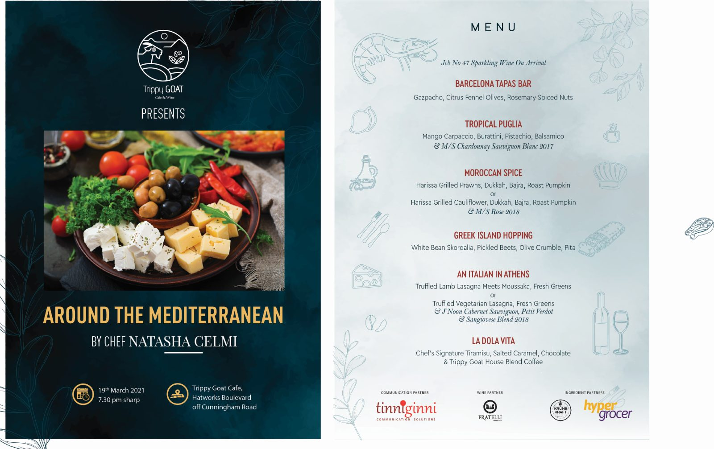

Trippy
Goat
Identity-led collateral for Around the Mediterranean — a one-night chef's table at a Bengaluru cafe and wine bar, hosted with Chef Natasha Celmi.

One evening, six stops around one sea.
Trippy Goat is a cafe and wine bar on Hatworks Boulevard, off Cunningham Road in Bengaluru. For Around the Mediterranean the room was given over to a single guest chef for one night, and the collateral had to do two jobs: sell the evening beforehand, then sit on the table as the menu itself.
The set runs from a dark, photographic invitation to a light, illustrated menu — the same evening seen from outside and from the table. A line-drawn botanical and seafood motif carries across both, so the pair reads as one piece without repeating itself.
Dark to announce it, light to serve it.
The invitation leads with the food and the chef's name against a deep teal ground. The menu inverts it — near-white, with the illustrated motifs stepped back so the courses carry the page.


A route, not a list.
Each course is named for where it lands rather than what it is, so the menu reads as a journey rather than a sequence of plates.
The same evening, reframed for the feed.
Landscape cuts carry the full course list into social and web placements. A coastline photograph replaces the plated shot so the format still reads at small sizes, and partner credits stay locked to the foot of every version.


Produced with Tinn Ginni as communication partner, Fratelli as wine partner, and Hyper Grocer among the ingredient partners.